The world that we live in is filled with all kinds of interesting things. Some of which are simply curious, while others give us time to pause and reflect. Still other things make us sit up straight and yell WTF! That’s what life is all about. It’s those things that really shake up our world.
I don’t know about you guys, but sometimes our world needs a good shaking or two. It helps cull the herd, so to speak.
Today, I would like to discuss “our” moon. This is the moon that orbits our planet. We call it “the moon”. We know that it is a cold, desolate and lonely place. It is an icy cold rock. It is covered in deep grey dust, and has both mountains and valleys.
It is also quite hollow…
How Planets Form
I would like to take a moment to discuss the hollow moon, and why it is hollow. However, first we need to lay out some real basic information in regards to how planets form. Because, if you know how planets form, you might end up having a better idea of how a planet could eventually become hollow.
Now, to most people, the idea that a planet could be hollow is a real stretch. It really is. We know that all planets are solid masses, and that most of them have hot molten cores. The cores are compressed under intense pressure and it takes a long, long time for them to cool down and solidify.
We know this. Not because we have been there. Not because we have tunneled down and touched the surface of the core. We know this because we assume it to be that way based on our current understandings of planetary formation.
Ah, we assume such things. And, because so many people assume the same thing that “everyone knows” that that is the way it is everywhere for all situations.
Well, let’s look at the contemporaneous theories of planetary formation, and then let’s take a look at what we know about the moon. We can put the two together and get a better picture of how the moon could actually become hollow. Right?
With that being stated, let’s look at the theories. We have a general idea about how planets form. Obviously we weren’t around when the solar system was first being formed. Our knowledge about such things is through observations of other stars. Most particularly younger stars and the dust that surrounds them.
Debris discs
Personally, I first started getting interested in debris discs when I started to follow the news about Epsilon Eridani, Fomalhaut, and Groombridge 1618. Now, I know the reader probably wants to go straight to all the “good stuff” about the moon. But, please indulge me. How can you talk about the moon and any voids inside of it, without discussing early planetary formation?
We know about early planetary formation through observation. We have observed the formation of planets within nearby youthful solar systems. Indeed, there are many youthful and young stars near our solar system. Some of my favorites include;
- Wolf 359 (CN Leonis)
- Sirius. Alpha Canis Majoris (α CMa)
- Luyten 726-8
- Epsilon Eridani
- Struve 2398
- Groombridge 34
- DX Cancri
- 2MASS J154043.42-510135.7
- Groombridge 1618
- AD Leonis
- Alpha Aquilae (Altair)
- Fomalhaut
- Zeta Leporis
Of course, this is not a complete list. There are just elements out of my own personal collection of interesting local solar systems of great youth (less than one billion years in age). And, yes, I do maintain files on solar systems that interest me. All of these nearby stars can well educate us on how stars are born and solar systems are created.
Yeah, I’m a bit strange. Once a nerd, always a nerd. I guess.
Young solar systems are dangerous. Whether they have managed to have planets, or not, they still have to contend with meteoroid and comet bombardments, not to mention a stabilization of gravitational orbits. On our planet, we needed four billion years to create physical ambulatory life. Many of the stars and systems on this list are a mere fraction of that age. Thus, suggestive of very hot molten planets if any exist at all.
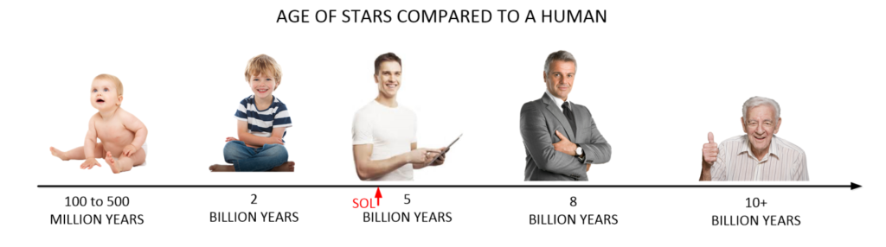
Scientists have watched these younger stars (and many, many others) and tracked the development and evolution of the dust around these stars. We have watched how they behave, and watched how they clumped together to form planets.
This clumping action is believed to follow a model (or technique) known as “spontaneous dust traps”. This theory, or model, suggests that the dust starts to clump together when a property of the dust, known as “aerodynamic drag back-reaction” starts to clump the dust together into “spontaneous dust traps”. Anyways, that is the theory put forth by a French-UK-Australian team working on this problem.
As the dust starts to clump, it gets larger and larger, forming masses or clouds that rotate around the parent star.
If you were to take a photo or snapshot of this period of time, the solar system would look very strange. There would be the young sun (of course). It would no longer be a proto-sun. (The gasses that coalesced to form the star would have ignited.) The star would be blazing away, but like all youthful stars, would be very unpredictable. It would possibly have large solar flares, and numerous properties making it a very dangerous place to be around. It wouldn’t be as nice and stable as our sun is today.
Surrounding the star would be numerous “belts” or rings of asteroids, dust and gas. They would tend to lie within a plane of rotation. This plane of rotation would be similar to that of the rotation of the star. These belts or rings would possess the various clumps of dust and gas. The solar system would also start to see the formation of asteroids and comets. They would go around the star in long elliptical orbits depending on the conditions of the solar system at the time. Eventually the clumps of dust and gas could form into planets.
Let’s look at three very interesting examples of young solar systems with observed debris discs. These are nearby systems. They are considered to be “local”, and all have debris discs that will eventually one day turn into planets. They are Epsilon Eridani, Groombridge 1618, Zeta Leporis and Fomalhaut.
Epsilon Eridani (BD−09°697)
The first star in our discussion is Epsilon Eridani. Epsilon Eridani (ε Eri, ε Eridani) is a star in the southern constellation Eridanus. It just happens to be a nice K-class star, which is of immediate interest to those of us who live around the sun; a nice G-class star.
As such, it is a main-sequence star of spectral class K2, which is slightly smaller and cooler than our sun, with an orange hue. Also, as a K-class star it is worthy of special consideration, as we, as humans, have evolved to live around class G and class K type stars.
It is important. All stars of G and K classes have attributes that significantly are compatible with our individualized biological archetype. (Apparently, that is not necessary the case with many of the other extraterrestrial species that we have come in contact with. They seem to prefer the cooler K and M class stars. It is an interesting subject, and I will devote a post to it later on.)
However, this solar system is not truly perfect for the needs of contemporaneous humans.
It is a young solar system. Indeed, its age is estimated at far less than a billion years. (Our own sun and its associated solar system is 4.5 billion years old.) Therefore, it is considered to be a young system, even infantile in construction.
Because of its youth, Epsilon Eridani has a higher level of magnetic activity than the present-day Sun, with a stellar wind 30 times as strong as our suns. The reader should understand that for young stars the internal organization of the sun is complex. there are internal “battles” and “reorganizations” of internal components depending on the star size, shape, orientation and many other factors. These changes manifest in many ways. All of which are hostile to organic life.
At less than a billion years of age, any rocky planets would be rather hot and inhospitable places; provided they follow the earth evolutionary model. One should not place too high expectations on this solar system as it is probably hazardous to spaceflight. The density of gas and dust in the system would probably be very high compared to our solar system. Fast, unprotected or unshielded, travel would be ill advised.
Planets
Because it is a nearby K-class star, astronomers have taken a greater than average degree of interest in this system. (Who figures? It’s a young star. It’s like being interested in the construction of a bakery because in two years they might start making crusty bread and rolls.)
Anyways, to this end a great search for planetary companions has been under way for some time. Because of this, there have been some discoveries of note. The system is believed to contain a number of planets and two belts of rocky asteroids: one at about 3 AU and a second at about 20 AU from the star. (One AU is equal to the distance of our earth from our sun.) Our asteroid belt is around 2 to 3 AU distant.
Knowing what we know about the formation of our own solar system; over time, many of the rocky bodies from these asteroid belts would eventually land on the other rocky and gas planets. Thus creating the craters that we now see on the moon and on Earth, and the “spots” on the gas giants. Any evolutionary efforts in this system at this time would be severely handicapped and retarded by the periodic bombardment of planetary bodies onto the potential habitable worlds. We call these events Periodic Mass Extinction Events.
It is believed that the structure of the outer asteroid belt may be maintained by a hypothetical second or even third planet, Epsilon Eridani b and Epsilon Eridani c.
Aside from the inner asteroid disk, and the outer asteroid disc, Epsilon Eridani also harbors an extensive outer debris field of remnant planetesimals left over from the system’s formation. This would manifest as an outer area of a surprising number of asteroids, comets and other planetary debris. As mentioned earlier, this solar system might be problematic to travel within.
For all practical purposes, this youthful system should be considered to be off limits to humanoids and consist of a dangerous region of dust, rocky debris and hot new planets.
BY Draconis variable
Epsilon Eridani is classified as a BY Draconis variable because it has regions of higher magnetic activity that move into and out of the line of sight as it rotates. Observations have shown that Epsilon Eridani varies as much as 0.050 in V magnitude due to star-spots and other short-term magnetic activity. The reader should understand that [1] high levels of chromospheric activity, [2] strong magnetic field, and [3] the relatively fast rotation rate of Epsilon Eridani are characteristic of a pretty young star.
Because of this, the age of Epsilon Eridani is estimated to be about 440 million years, but this remains subject to debate. Most age estimation methods place it in the range from 200 million to 800 million years. Compared to our earth, this would place any planet in orbit around the star to be a rocky planet with a heavy and dense gaseous body swathed in vicious storms that shrouds a very hold, mostly molten planet surface. On the planet, particularly around the pole might be some early rocky continents with bleak mountains punctuated with volcanoes and extreme seismic activity. Not really a very hospitable place to live. The closest earth-similar geologic comparative would be the Hadean Eon.
In any event, this is a particularly young star and system. As such it is only marginally of interest towards habitability considerations. Of course, that doesn’t stop most people from looking up (on the internet) what the potential habitable zone would be around this star. (You can see one at Sol Station for Epsilon Eridani here.) It’s seems rather silly, doesn’t it?
I mean to say, yes in theory you can drive a road listed on a map near an active volcano. But, whether that road is clear and has a drivable surface is another issue altogether. The same is true with (potentially) habitable zones around really young stars. The data associated with the (so-called) zone of habitability is only appropriate in stable solar systems. It is not appropriate for young, growing, and immature solar systems.
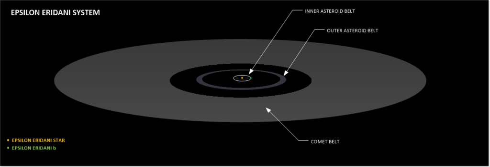
Kuiper belt
Surrounding Epsilon Eridani is a compact dusty disk structure that is considered to be the Solar System’s Kuiper belt. From Earth, this belt is viewed at an inclination of roughly 25° to the line of sight. Dust and possibly water ice from this belt migrates inward because of drag from the stellar wind and a process by which stellar radiation causes dust grains to slowly spiral toward Epsilon Eridani. This is known as the Poynting–Robertson effect.
Multiple Asteroid belts
Observations from NASA’s Spitzer Space Telescope suggest that Epsilon Eridani actually has two asteroid belts [1 & 2]. In addition it has a [3] cloud of exozodiacal dust. This dust is an analog of the zodiacal dust that occupies the plane of our Solar System.
One belt sits at approximately the same position as the one in our Solar System, orbiting at a distance of 3.00 ± 0.75 AU from Epsilon Eridani. This belt consists of silicate grains with a diameter of 3 μm and a combined mass of about 1018 kg. If the planet Epsilon Eridani b exists then this belt is unlikely to have had a source outside the orbit of the planet, so the dust may have been created by fragmentation and cratering of larger bodies such as asteroids, or small moonlets.
Age and probability of life
The age of the star can be a useful data point when it comes to habitability. Here we look at the timescale on which life arises, a challenging issue because all we have to work with is what we know of life’s development on Earth. In general planets in the habitable zone of F, G or K stars should see the last wave of giant impacts on their young surfaces at around 100 million years. Given that impacts likely sterilized our planet for several million years, this is an important issue, and stellar age, if known, can factor into the question of habitability.
It is thus my opinion that the system is too youthful for meaningful potentially habitable planets. There is no chance of naturally evolved life greater than a germ, and the presence of the two large asteroid belts suggest that periodic bombardment of asteroids and comets are a regular occurrence. This would be a great place to visit, not a place that anyone would want to call home.
Planet Hunting Efforts
Epsilon Eridani is a target for planet finding programs because it has properties that allow an Earth-like planet to form. However, if any planet has formed in the system it would be very young and inhospitable to human life. It would resemble the earth during the early Hadean time period.
Habitable Zone
The orbital radius at which the stellar flux from Epsilon Eridani matches the solar constant—where the emission matches the Sun’s output at the orbital distance of the Earth—is 0.61 astronomical units (AU). That is within the maximum habitable zone of a conjectured Earth-like planet orbiting Epsilon Eridani, which currently stretches from about 0.5 to 1.0 AU. However, the presence of a large planet with a highly elliptical orbit in proximity to Epsilon Eridani’s habitable zone reduces the likelihood of a terrestrial planet having a stable orbit within the habitable zone (at this stage in the solar system’s life).
All told, the likelihood of any kind of Earth-like or marginally habitable world in this system is extremely remote. The youth of the solar system, coupled with the dangers inherent in a dust and rock strewn system, not to mention the wide variability of orbits all create an environment that is absolutely not conducive to human life.
UV Radiation
A young star such as Epsilon Eridani can produce large amounts of ultraviolet radiation that may be harmful to life. The orbital radius where the UV flux matches that on the early Earth lies at just under 0.5 AU. Epsilon Eridani’s proximity, Sun-like properties and suspected planets have made it a destination for interstellar travel in science fiction stories. Unfortunately, the authors of these fictional stories have failed to take into account the dangers of living in a UV saturated environment. As such, most, if not all, biological life would be irritated into sterility in short order.
Reports of Extraterrestrial Life
There have been statements made by numerous people concerning life in this system. As such, I present these reports here for your curiosity and amusement. For the record, I do NOT believe any of these reports. I do not believe a single one of them.
There is absolutely no native evolved life in this solar system.
Reports that imply or state directly that there is native, naturally evolved life around this planet are false. Additionally, reports that state that there is an established colony of some kind of transplanted intelligent life around this solar system is also false. At best, there might be a periodic visit by interested scientific parties, but that is about it.
I have collected some of these statements for the reader to consider. I do not believe any of them.
Wendelle Stevens
Wendelle Stevens mentions an extraterrestrial civilization in the Eridanus Constellation:
"Another contact that has been going on since October of 1969, and still continues, involves a life-form from another atmospheric planet orbiting a sun some 20 light years away near the star we call Epsilon Eridani. We believe the star indicated to be 82 Eridani as this is a G5 star quite similar to our own sun which is in spectral class GO and is about the right 20 light years distance away. These creatures were larger, like 7 to 7.5 feet tall, and were covered with wrinkled skin and had very large arms with 3 fat fingers on the end. The skin has plates and wrinkles, something like crocodile skin. They had strange faces and a large mouth and very large ears, but they, like the Iargans demonstrated a highly advanced technology." - Wendelle Stevens
Branton
The Branton material, in Mojave II, quotes the “Ufo Journal of Facts, Spring 1991” that tells the story of the recovery of a crashed craft with a Mediterranean or Latin American looking alien.
"His skin was a bronze color, reminiscent of Mediterranean or South American cultures. His hair was similarly brown and very short in a Roman or crew style cut. The only real difference in appearance from earth humans were that his ears were slightly pointed." -Branton
The inhabitant was “confirmed” to be from Epsilon Eridani.
“Bashar’s Lab”
It seems like everyone has an opinion. Here is an instance of a “channeled entity” if you go into those things. (Means if you believe in the possibility of this occurring.) The movie “Bashar’s lab” discusses many universal principles, and at the end of it, Bashar went through a list of nearby star systems where he (or it) said that intelligent alien life existed at this time. One of them was Epsilon Eridani.
“Epsilon Eridani - 10.5 light years away, one indigenous civilization” -Bashar.
Victor Martinez
Victor Martinez, the e-mail information coordinator, is a former federal employee with an interest in space, defense and current affairs. Recipients of his e-mail news items include a wide variety of people interested in emerging and leading-edge scientific and other developments. He is somehow tied together with this Serpio issue (hoax or not). Meh. You can read about it here. I don’t know what to think, but he was NOT in MAJestic.
Martinez quoted one of his alleged established contacts, one of a handful of current or former officials of the DIA, regarding any new or updated information on extraterrestrial encounters that would be of interest to the public. A source reportedly stated to Martinez that the home world of the alleged hostile alien species, the Trantaloids;
"…is the third planet out from the star Epsilon Eridani in the constellation Eridanus at 10.5 light-years away. Although somewhat cooler and fainter than our sun, it is very similar." -Victor Martinez
My Opinions
This system consists of very active BY Draconis variable star. It is a very young and dangerous physical system. It fries the planets surrounding it with UV radiation. There are no naturally evolved native life (that we would recognize as such) around this system. Anyone claiming otherwise is deluded, or worse.
Groombridge 1618 (Gliese 380)
Groombridge 1618 is a star in the constellation Ursa Major. It is also located close to Earth, at a distance of less than 16 light years. It is an orange dwarf star of spectral type K8 V.
Groombridge 1618 is a young K-type main sequence star that is generating energy by fusing hydrogen at its core. It has 67% of the mass of the Sun, 61% of the Sun’s radius, but radiates only 4.6% of the Sun’s energy. The effective surface temperature of the star’s photosphere is about 4,000 K, giving it an orange hue. To our human eyes it would appear much dimmer than our sun.
It is also a BY Draconis variable with a surface magnetic field strength of 750 G. The chromosphere is relatively inactive and possesses star spots comparable to Sun spots. However, like the star UV Ceti, it has been observed to undergo increases in luminosity as a flare star. It has a greater luminosity than most flare stars, which are typically red dwarfs, but is less active. The level of activity suggests that this is a somewhat youthful star.
Debris Disk
A search for an excess amount of infrared emission from this star by the Infrared Space Observatory came up negative, implying that Groombridge 1618 does not possess a debris disk (such as Vega). Which would normally be a good enough reason not to include it in this calculus.
However, observations using the Herschel Space Observatory showed a small excess suggesting the presence of a low temperature debris disk. The data can be modeled by a ring of coarse, highly-reflective dust at a temperature below 22 K orbiting at least 51 AU from the host star. If this star does have a companion, astrometric measurements appear to place an upper bound of 3–12 times the mass of Jupiter on such a hypothetical object (for orbital periods in the range of 5–50 years).
Planetary Companions
According to Marcy & Benitz (1989), a possible periodicity of 122 days has been detected, inferring the potential presence of a massive planetary object with minimum mass 4 times that of Jupiter. This candidate planet has not been confirmed and the signal the authors had found could have been due to intrinsic stellar activity from the star’s young age. If confirmed, the planet would be located at the outer edge of the star’s habitable zone.
Habitable Zone
Since Groombridge 1618 is sort of like a distant cousin to Sol, some speculate whether it might just be bright enough to support Earth-type life on a planet “lucky enough” to orbit in its habitable zone.
Estimates provided by the NASA Star and Exoplanet Database indicate that the inner edge of Groombridge 1618’s habitable zone could be located around 0.354 AU from the star, while the outer edge lies around 0.691 AUs out. The distance from the star where an Earth-type planet could have liquid water on its surface is centered around 0.523 AU — between the orbital distances of Mercury and Venus in our Solar System. At that distance from the star and assuming that it has 0.64 Solar-mass, such a planet would have an orbital period of nearly 173 days (or close to half an Earth year).
Which is just great. You have a planet that looks like a Biblical version of Hell located in an area where water and breathable atmosphere might form… Maybe, in around a billion years, that is.
Zeta Leporis
Zeta Leporis is located about 70.2 light-years from Sol. (Therefore, it is perhaps rather confusing to place it herein. Eh? But, you know, our extraterrestrial associates consistently reiterate to us that physical distance is not at all the barrier to travel that we make it out to be.) It lies in the northeastern part of Constellation Lepus, the Hare.
In 1983, astronomers used the Infrared Astronomy Satellite (IRAS) to determine that the star has a remnant, circumstellar dust disk. Subsequently, astronomers announced in June 2000 that abundant, warm dust around this star was strong evidence of a massive asteroid belt. This feature might also indicate that planets are or have already formed in this system.
The Star
Zeta Leporis is a bluish-white main-sequence dwarf star of spectral and luminosity type A2-3 Vann. Zeta Leporis has a stellar classification of A2 IV-V(n), suggesting that it is in a transitional stage between an A-type main-sequence star and a subgiant star. The (n) suffix indicates that the absorption lines in the star’s spectrum appear nebulous because it is spinning rapidly, causing the lines to broaden because of the Doppler effect. The star has about 1.46 times the mass of the Sun, more than 1.7 times its diameter, and over 15 times its luminosity. At least one past spectroscopic analysis has suggested that the star might have a binary companion.
Age
It appears to be very young, probably only around 100 million years old but could be anywhere between 50 and 500 million years old. This is far too young to develop cool rocky planets from which to establish any kind of known planets or planetary bodies. Any planetary companions will be rather hot, dusty and gaseous. Think of planets like a completely molten Venus, or a very hot Jupiter.
Hey, maybe if you landed on one of these planets, and picked up a pick axe, and thrust it into the rocky soil… a plume of molten magma would ooze out.
Asteroid Belt & Dust Disk
In June 2001, astronomers announced that Zeta Leporis is enveloped by swirling dust in substantial quantities and at elevated temperatures. These observations appear to indicate that solid rocks are colliding and generating dust in an asteroid belt shaped ring. This might be similar to the one surrounding our own Sun between Mars and Jupiter.
By observing at two infrared wavelengths, the investigators estimated that the average temperature of the dust around the star is around 340 K (150 F or 65 C), hot enough to suggest that the dust grains may be as close as 2.5 AUs to the star. This is approximately the same distance as the asteroid belt is to our sun.
The history of this discovery is interesting.
The star was initially found to have a ring of dusty debris in 1983 along with some other young stars. This was very curious, and resulted in other subsequent studies of the solar system. After a period of observation, in 1991 astronomers learned that this debris ring was unusually warm and close to its parent star. This was quite unlike other disks (found in other stars) that are much farther out and substantially colder.
This dust, given its known properties, should spiral into a star within 20,000 years, according to current theories of physics and star formation. Since Zeta Leporis is much older (than the other “early stars” that had been studied previously), its observed dust grains were not there when the star first formed, and so they must be generated through some secondary process. Such as collisions between larger objects. These presumed asteroids could be the size of small or large boulders, which collide and grind against each other to form micron-sized grains.
From the strength of the infrared signature of the dust, the astronomers estimate that the mass of the asteroid belt may be about a thousand times (1,000x) that of the Main Asteroid Belt in the Solar System lying between Mars and Jupiter.
The ring of debris appears to be confined to a region between 2.5 and 12.2 AUs from the star. Previous research reported in 1999 suggested that these circumstellar dust disks tend to disappear when a star is about 400 million years old which is towards the upper end of the age estimate for Zeta Leporis.
Solar encounter
Calculations from 2010 suggest that this star passed as close as 1.28 parsecs (4.17 light-years) from the Sun about 861,000 years ago.
Earth like planets
The orbit of an Earth-like planet (with liquid water) around Zeta Leporis may be centered around 3.9 AU (around the central orbital distance of the Main Asteroid Belt in the Solar System) with an orbital period of several years.
Even if an Earth-sized planet has already formed around young Zeta Leporis, it is unlikely to have cooled off sufficiently to have formed crustal rock. After it cools off enough for life to develop, only primitive single-cell, anaerobic bacteria is likely survive under constant bombardment by meteorites and comets as Earth was for the first billion years of existence.
Since there is unlikely to be free oxygen in the atmosphere of such a planet, it probably would not have an ozone layer (O3) although Zeta Leporis puts out a lot more hard radiation (especially ultraviolet) than Sol. Astronomers would find it very difficult to detect an Earth-sized planet of this star using present methods.
Fomalhaut
Fomalhaut (Alpha Piscis Austrini, Alpha PsA, α Piscis Austrini, α PsA) is the brightest star in the constellation Piscis Austrinus and one of the brightest stars in the sky. It is a class A star on the main sequence approximately 25 light-years (7.7 pc) from Earth as measured by the Hipparcos astrometry satellite.
Since 1943, the spectrum of this star has served as one of the stable anchor points by which other stars are classified. It is classified as a Vega-like star that emits excess infrared radiation, indicating it is surrounded by a circumstellar disk. Fomalhaut, K-type star TW Piscis Austrini and M-type star LP 876-10 constitute a triple system even though the companions are separated by several degrees.
Fomalhaut holds a special significance in extrasolar planet research, as it is the center of the first stellar system with an extrasolar planet candidate (Fomalhaut b) imaged at visible wavelengths. The image was published in Science in November 2008. Fomalhaut is the third brightest star known to have a planetary system (as viewed from Earth), after Pollux and the Sun.
Fomalhaut A
At a declination of −29.6°, Fomalhaut is located south of the celestial equator, and hence is best viewed from the Southern Hemisphere. Fomalhaut is about 45˚ south of Alpha Pegasi, with no bright stars in between.
Properties of Fomalhaut A
Fomalhaut is a young star, for many years thought to be only 100 to 300 million years old, with a potential lifespan of only a billion years. A 2012 study gave a slightly higher age of 440±40 million years. The surface temperature of the star is around 8,590 K (8,320 °C). Fomalhaut’s mass is about 1.92 times that of the Sun, its luminosity is about 16.6 times greater, and its diameter is roughly 1.84 times as large.
Fomalhaut is slightly metal-deficient as compared to the Sun, which means it is composed of a smaller percentage of elements other than hydrogen and helium. The metallicity is typically determined by measuring the abundance of iron in the photosphere relative to the abundance of hydrogen. A 1997 spectroscopic study measured a value equal to 93% of the Sun’s abundance of iron. A second 1997 study deduced a value of 78% by assuming Fomalhaut has the same metallicity as the neighboring star TW Piscis Austrini, which has since been argued to be a physical companion. In 2004, a stellar evolutionary model of Fomalhaut yielded a metallicity of 79%. Finally, in 2008, a spectroscopic measurement gave a significantly lower value of 46%.
Fomalhaut has been claimed to be one of approximately 16 stars belonging to the Castor Moving Group. This is an association of stars that share a common motion through space and have been claimed to be physically associated. Other members of this group include Castor and Vega. The moving group has an estimated age of 200±100 million years and originated from the same location. Unfortunately more recent work that has found that purported members of the Castor Moving Group appear to not only have a wide range of ages, but their velocities are too different to have been possibly associated with one another in the distant past. Hence, “membership” to this dynamical group has no bearing on the age of the Fomalhaut system.
Debris disks and planet
Fomalhaut is surrounded by several debris disks.
The inner disk is a high-carbon small-grain (10-300 nm) ash disk clustering at 0.1 AU from the star. Next is a disk of larger particles with inner edge 0.4-1 AU of the star. The innermost disk is unexplained as yet.
The outermost disk is at a radial distance of 133 AU (1.99×1010 km; 1.24×1010 mi), in a toroidal shape with a very sharp inner edge, all inclined 24 degrees from edge-on. The dust is distributed in a belt about 25 AU wide. The geometric center of the disk is offset by about 15 AU (2.2×109 km; 1.4×109 mi) from Fomalhaut. The disk is sometimes referred to as “Fomalhaut’s Kuiper belt”. Fomalhaut’s dusty disk is believed to be protoplanetary, and emits considerable infrared radiation. Measurements of Fomalhaut’s rotation indicate that the disk is located in the star’s equatorial plane, as expected from theories of star and planet formation.
On November 13, 2008, astronomers announced an object, which they assumed to be an extrasolar planet, orbiting just inside the outer debris ring. This was the first extrasolar orbiting object to be seen with visible light, captured by the Hubble Space Telescope. [A planet’s existence had been previously suspected from the sharp, elliptical inner edge of that disk. The mass of the planet, Fomalhaut b, was estimated to be no more than three times the mass of Jupiter but at least the mass of Neptune. There are indications that the orbit is not apsidally aligned with the dust disk, which may indicate that additional planets may be responsible for the dust disk’s structure.
However M-band images taken from the MMT Observatory put strong limits on the existence of gas giants within 40 AU of the star[ and Spitzer Space Telescope imaging suggested that the object Fomalhaut b was more likely to be a dust cloud. In 2012, two independent studies confirmed that Fomalhaut b does exist; but it is shrouded by debris, so it may be a gravitationally-bound accumulation of rubble rather than a whole planet.
Herschel Space Observatory images of Fomalhaut reveal a large amount of fluffy micrometer-sized dust is present in the outer dust belt. Because such dust is expected to be blown out of the system by stellar radiation pressure on short timescales, its presence indicates a constant replenishment by collisions of planetesimals. The fluffy morphology of the grains suggests a cometary origin. The collision rate is estimated to be approximately 2000 kilometer-sized comets per day.
Observations of the star’s outer dust ring by the Atacama Large Millimeter Array point to the existence of two planets in the system, neither one at the orbital radius proposed for the HST-discovered Fomalhaut b.
If there are additional planets from 4 to 10 AU, they must be under 20 MJ; if from 2.5 outward, then 30 MJ.
| The Fomalhaut planetary system | |||||
| Companion (in order from star) | Mass | Semimajor axis (AU) | Orbital period (years) | Eccentricity | Inclination |
| Inner hot disk | 0.08–0.11 AU | — | |||
| Outer hot disk | 0.21–0.62 AU or 0.88–1.08 AU | — | |||
| 10 AU belt | 8–12 AU | — | |||
| Interbelt dust disk | 35–133 AU | — | |||
| b | ? MJ | 177±68 | ~1700 | 0.8±0.1 | −55° |
| Main belt | 133–158 AU | −66.1° | |||
| Main belt outer halo | 158–209 AU | — |
Fomalhaut b is one of the planets selected by the International Astronomical Union as part of their public process for giving proper names to exoplanets. The process involves public nomination and voting for the new name, and the IAU plans to announce the new name in mid-November 2015.
"Still, it rankles me and some others in astronomy that the professional astronomers of the IAU are claiming the exclusive right to give ‘approved’ names to the stars. The stars – and the sky – belong to all of us. Other organizations have popped up that will also name these features for you, for a price. " -Earthsky.org
I suggest the name of “Commode” for Fomalhaut Ab. It belongs on this table.
Fomalhaut B (TW Piscis Austrini)
Fomalhaut forms a binary star with the K4-type star TW Piscis Austrini (TW PsA, Fomalhaut B).
TW Piscis Austrini lies 0.28 parsecs (0.91 light years) away from Fomalhaut, and its space velocity agrees with that of Fomalhaut within 0.1±0.5 km/s, consistent with being a bound companion. A recent age estimate for TW PsA (400±70 million years), agrees very well with the isochronal age for Fomalhaut (450±40 million years), further arguing for the two stars forming a physical binary.
The designation TW Piscis Austrini is astronomical nomenclature for a variable star. Fomalhaut B is a flare star of the type known as a BY Draconis variable. It varies slightly in apparent magnitude, ranging from 6.44 to 6.49 over a 10.3 day period. While smaller than the Sun, it is relatively large for a flare star. Most flare stars are red M-type dwarfs.
Fomalhaut C (LP 876-10)
LP 876-10 (Fomalhaut C) is also associated with the Fomalhaut system, making it a trinary star.
In October 2013, Eric Mamajek and collaborators from the RECONS consortium announced that the previously known high-proper-motion star LP 876-10 had a distance, velocity, and color-magnitude position consistent with being another member of the Fomalhaut system. LP 876-10 was originally catalogued as a high-proper-motion star by Willem Luyten in his 1979 NLTT catalogue, however a precise trigonometric parallax and radial velocity was only measured quite recently.
LP 876-10 is a red dwarf of spectral type M4V, and located even further from Fomalhaut A than TW PsA—about 5.7° away from Fomalhaut A in the sky in the neighboring constellation Aquarius, whereas both Fomalhaut A and TW PsA are located in constellation Piscis Austrinus. Its current separation from Fomalhaut A is about 0.77 parsecs (2.5 light years), and it is currently located 0.987 parsecs (3.2 light years) away from TW PsA (Fomalhaut B). LP 876-10 is located well within the tidal radius of the Fomalhaut system, which is 1.9 parsecs (6.2 light years). Although LP 876-10 is itself catalogued as a binary star in the Washington Double Star Catalog (called “WSI 138”), there was no sign of a close-in stellar companion in the imaging, spectral, or astrometric data in the Mamajek et al. study.
In December 2013, Kennedy et al. reported the discovery of a cold dusty debris disks associated with Fomalhaut C, using infrared images from the Herschel Space Observatory. Multiple-star systems hosting multiple debris disks are exceedingly rare. The disc is roughly from 10 to 40 AU.
Summary
We can summarize the known debris discs on nearby stars. We can also compare them to the discs that orbit our star. Here is a quick and handy summary;
| Star | Distance of Inner Disc | Distance of Middle Disc | Distance of Outer Disc |
| Sol | 2 – 3 AU | 2K – 5K AU | |
| Epsilon Eridani | 3.00 ± 0.75 AU | 20 AU | |
| Groombridge 1618 | 51 AU | ||
| Zeta Leporis | 2.5 AU | ||
| Fomalhaut A | 8–12 AU | 35–133 AU | 133–158 AU |
| Fomalhaut C; LP 876-10 | 10 – 40 AU |
Planets
The importance of debris discs should not be underestimated. It is from these rings of dust and debris that planets form.
Now, once the dust and debris discs start to form into clumps, it is only a matter of time before the clumps start to form into planets. On a geologic scale, this activity occurs rather rapidly. The gas and dust collects and then compresses as it rotates and swirls during it’s rotation around the star. As it does so, the compression draws the gas and dust towards the mass. It starts forming into a ball. It get hotter and hotter as the dost and gas fall into it. But, unlike stars, it fails to ignite. It just forms an “almost star”, a planet.
There are numerous types of planets that they could form into.
For our purposes, we can best classify them simply. They can be as either “rocky planets” or “gaseous planets”. A rocky planet might or might not have an atmosphere. A gaseous planet would be one that would have both a gaseous atmosphere, and be rather large. In our solar system all of the “outer planets” are gaseous planets, and all of the “inner planets” are rocky.
There is a dividing line between these two types of planets known as the “frost line”. It is considered to be well understood, but after viewing other solar systems, we find that is riddled with all kinds of exceptions. It is a theory that works well for our solar system, but seems to have a few bugs when we look at other solar systems. (But then again, my understanding of it might be flawed.)
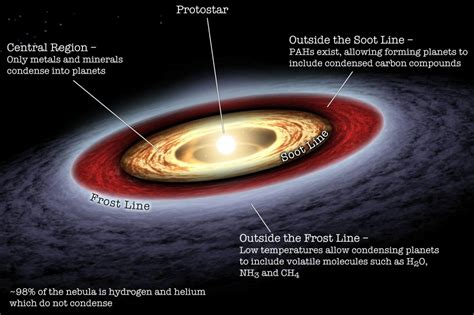
Over time, the planets age. They go through stages or eons. This is much the same way that people age. They are born hot. As such they are very uncomfortable. The environment is hot, the atmosphere, if any is toxic and unstable. The magnetic field and other attributes such as planetary rotation, pole tilt, and orbital inclination might be subject to change.
Most planets will go through an aging process much like what we have seen on the earth. These periods are in general;
- Hadean . Most planets look like the medieval idea of Hell.
- Archean . First microbes. Possible liquid water.
- Proterozoic . Early life.
- Phanerozoic . Dinosaurs to humankind.
We really haven’t come up with older time periods because we are trapped on the earth, and we do not know enough about planets older than our planet. What we can assume is pretty much a stabilization of the planet over time. As the solar system stabilizes, so does the planets orbiting within it. Over time the risk of planetary bombardment decreases. Over time the star becomes more stable (except for O, B, and A stars for the most part), and that affects the planets as well. With planetary and stellar stability comes native life.
We know that life pretty much can crop up anywhere. There are those who are still looking for “proof” that this is possible. Fine for them. I’ll let the reader into a little secret; Yah it’s damn common everywhere. You don’t need too much effort to get it all started.
While life is scurrying about on the planet surface, the planet ages like anything else. It gets colder. The internal heat that kept the interior nice and toasty eventually starts to cool down. Eventually, it will cool down enough that the core becomes solid and the planet sort of “dies”. Now those on the surface of the planet might not be aware of it, but that is what happens. It’s like a tooth where the root dies. It might be salvaged with a “crown”, but the old tooth is gone. It is dead.
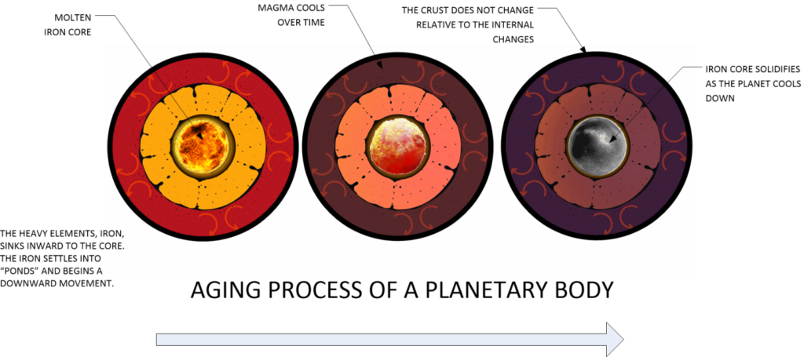
All planets age.
We are still learning about this. However, as the planet ages, the amount of heat inside the planet decreases. It cools down. That means that there is a decrease in the fluidity of the interior, a decrease in the magma movement, a decrease in the convective currents, and a noticeable decrease in the resiliency of a given planet. Once the planet cools down sufficiently, it becomes a cold, solid rocky body.
The closer a planetary body is to a star, the longer it will take to cool down. The further away it is from the star, the quicker it will take to cool down.
Anyways, the life that we see on the planet all round us is what happens after around 4.5 billion years of planetary growth. It didn’t just spring up out of nothing. It formed over time.
How the Moon Formed
Now there is a minor debate on how the moon was formed.
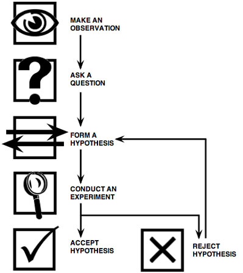
Here are some of the theories, with the “giant impact hypothesis” being the strongest contender. Initially, when people started to ponder the construction of “our” moon and why it is there, they came up with various theories. The first of which was the most obvious. It is known as the Co-formation hypothesis.
Co-formation hypothesis
Of course, who is to say that the moon did not form at the same time as the earth did? That is the key premise behind the co-formation theory. In this theory eddies and tides formed as the dust and gas started to create the earth. One such collection of dust and debris began to from near the earth and entered orbit around it.
Such a moon would have [1] a very similar composition to the planet earth, and [2] would explain the moon’s present location. This, and the fact [3] that this seems a logical extension of planetary evolutionary theory makes this a very attractive scenario.
However, there is a problem. While both the earth and the moon are pretty much composed of the same materials, they do not share the same density. That’s right. The moon is significantly less dense that our earth. This would not at all be the case if both the moon and the earth started out with the same materials during formation.
Which brings us to the Giant Impact hypothesis…
Giant impact hypothesis
To refine the theory regarding how the moon came to be, and to take into account its’ odd density, scientists have come up with a different theory.
The prevailing theory, which is supported by the scientific community, is one known as “the giant impact hypothesis”. This theory suggests that the moon formed when an object smashed into the early Earth. This would have been really early on during the Hadean period. The earth was hot, semi-molten, and constantly bombarded with dust, gas and meteoroids. After all, during that time period the early solar system was awash in all kinds of clumps of early planetoids, proto-planets, and just plain masses and clumps of “stuff”.
The theory believes that the original earth was much larger than it is today. As such, it was bigger in size, with a stronger gravitational pull.
The theory has even named the object that apparently collided with the earth. It has been named as Theia. According to the theory, Theia was the size of (present day) Mars when it collided with the Earth. Now, of course, such a collusion would have been quite messy and spectacular. Obviously you would not want to be present when this occurred. It would have been very unhealthy.
When it hit the earth, it threw up vaporized chunks of the earth into space. These chunks would find orbits around the sun. These chunks might be anything from gravel sized rocks, to huge blocks of crust looking more like humongous planetoid-sized orange peels than anything else.
Over time, the orbits of many of these objects would boomerang them back towards the earth. They would enter into orbits that would cause them to be gravitationally bound to the earth. Over time, these chunks would then again be drawn together. Since these elements came for the lighter material of the earth’s surface, and not from the heavier material inside the earth, they formed a large planetary object. A planetary object containing elements of the torn earth and Theia. This object became gravitationally bound to the earth. It orbited it and became the moon that we know of today.
Of course, the assumptions regarding this theory has some issues that do need to be addressed. For instance, why would the debris clump together and form the moon, and not fall back into the earth instead? If you believe and follow this theory, they you would come to the conclusion that it is easier to form a moon than to be gravitationally attracted to the earth.
But hey, what do I know?
They theory has many believers. Firstly because the apparent composition of the moon is suggestive of this theory, and secondly that as the material drew together around what was left of Theia’s core, it would have centered near Earth’s ecliptic plane. This ecliptic plane is whereupon the path the sun travels through the sky. It is also which is where the moon orbits today.
This theory, also has its problems as well.
Most computer models suggest that most of the moon (over 60%) should be made up of the striking object; Theia. These models are based on classical dynamics. As such, it is surprising to note that actual rock samples from the Apollo space missions indicate otherwise. Either the samples from the missions are of something else, the computer simulations are wrong, the presumed material content of Theia is incorrect, or the entire theory is just bunk. Ah, such is the bane of the theory-of-the-day.
"In terms of composition, the Earth and moon are almost twins, their compositions differing by at most few parts in a million. This contradiction has cast a long shadow on the giant-impact model." - Alessandra Mastrobuono-Battisti, an astrophysicist at the Israel Institute of Technology in Haifa, as interviewed by Space.com.
Some links;
- Moon emerges from cloud of vaporized Earth rock
- Moon may have formed through multiple impacts on ancient Earth
- Moon formed out of tremendous collision
- The Giant Impact Hypothesis from space.com
- The Giant Impact Hypothesis from Wikipedia
- The Origin of the Moon | Planetary Science Institute
- The Giant-Impact Hypothesis for the Moon’s Formation Is in Doubt
- A great source for all of the arguments both pro and con
The Multiple-Impact hypothesis
Since the actual findings of the rocks brought back from Apollo do not agree with the Giant Impact hypothesis, maybe there are other theories that might.
One team, quoted above, the Mastrobuono-Battisti’s team, was able to create a model to do just this. Their model suggests that Theia and the Earth shouldn’t be as widely different as previously believed.
Their theory is that instead of one huge planet named Theia smashing into the earth, many smaller objects did so. This was a rain of small debris that kicked up the earth’s crust into orbit. Over time, the debris entered orbit around the earth and collapsed together forming the moon. Their belief suggests that there was a constant rain of debris that collided with the proto-planet. This debris ended up forming the moon as well now know it.
This theory has been named the “Multiple-Impact hypothesis”, but I find it a poor naming convention. I prefer to consider this theory to be more like a “dribble of debris” rather than a “Multiple-Impact hypothesis”. After all, the impression that you get from the naming convention is a number of larger objects colliding into the proto or early earth. This is instead of a “dribble of debris” that splashed into the molten, early earth kicking up a large disc of debris that orbited the earth and eventually became the moon.
Well, that is all well and good. However, I am still having some trouble getting my arms around that most basic concept of the theory. Which is that orbiting objects would prefer to form a moon rather than fall towards a larger gravitational sink; the earth.
The Multi-Collision hypothesis
Perhaps some of the problems with the theory might be explained away by having multiple bodies that plunged into the earth. In 2012, researcher Robin Canup, of the Southwest Research Institute in Texas, proposed that Earth and the moon formed at the same time, much like the co-formation theory. However, it was not due to swirling eddies of gas and debris that became gravitationally bound. Rather it was when two massive objects, both five times the size of Mars, crashed into each other.
"After colliding, the two similar-sized bodies then re-collided, forming an early Earth surrounded by a disk of material that combined to form the moon. The re-collision and subsequent merger left the two bodies with the similar chemical compositions seen today.” -NASA said.
Some Links;
- NASA Lunar Scientists Develop New Theory on Earth and Moon Formation
- Earth Had Two Moons That Crashed to Form One, Study Suggests
Capture hypothesis
This is a pretty much “textbook” theory.
In the “Capture hypothesis”, Earth’s gravity managed to attract and capture a passing planetary body. This thesis has many advocates, as that was exactly what happened with many other moons in the solar system. Examples include the two moons of Mars, and numerous moons around the outer planets.
The capture theory solves and answers many of the perplexing questions that arise with other theories. For instance, it would explain the differences in the composition of Earth and its moon.
However, is also a problem with this theory as well. Typically, from what we know, captured planetoids are often oddly shaped. They are not spherical bodies like the moon is. Additionally, their orbital paths don’t conveniently line up with the ecliptic of their parent planet. Which is something that the moon does.
Apparently, the capture took some time with the moon starting in long elliptical paths where it would swing close to the earth (far closer than it does now), and swing far out and away from the earth. Eventually the orbits settled down into what we observe here today.
"Present-day nautilus shells almost invariably show thirty daily growth lines (give or take a couple) between the major partitions, or septa, in their shells. Paleontologists find fewer and fewer growth lines between septa in progressively older fossils. 420 million years ago, when the moon circled the earth once every nine days, the very first nautiloids show only nine growth lines between septa. The moon was closer to the earth and revolved about it faster, and the earth itself was rotating faster on its axis than it is now. The day had only twenty-one hours, and the moon loomed enormous in the sky at less than half its present distance from earth." -Earth’s days used to be just 18 hours long, but the Moon changed that
The Placement hypothesis
Of course, if you go through the “approved” search engines you can find the above theories quite readily. Like anything else, if you hit 100,000 websites talking about the “Giant Impact hypothesis” you might be under the impression that that is most prevailing theory. So when you come across an odd-ball theory, there is a tendency to discount it as “radical”, “out of the mainstream”, or just plain “nonsense”.
So, here is the ruler for all of you out there in Internet land; all theories are just theories. Some have more validity than others, based on their observed and measured attributes.
Here is a theory that deserves consideration. Especially, in light of other characteristics that will be addressed later on. This theory, which goes by the name “The Placement hypothesis” concerns that (outrageous) idea than an advanced spacefaring society intentionally placed the moon in orbit around the earth.
“The world, we are told, was made especially for man — a presumption not supported by all the facts.” ― John Muir, A Thousand-Mile Walk to the Gulf
Hum. Is that so?
You think?
Currently, conventional scientific theory holds that the Moon was born from earth during an early period of formation. This is a theory based on some solid and compelling information, but it is a theory and not without its problems.
To go along with this theory would require some pretty steep proof. For not only would the moon have to be composed of the same kinds of isotopes found in our solar system, but it would need to have a different composition than the earth. Which some of the other theories also address. Yet, this theory must ALSO indicate the following more problematic characteristics;
Firstly [1], that there are other extraterrestrials “out there”, that [2] have the technical ability to actually move a planet or planetoid in an orbit around the earth, [3] that they did so hundreds of millions of years ago, and finally [4] they have a reason to do so.
Because these four characteristics are considered to be “outlandish” by the scientific statists, the theory is ignored and neglected as not even worthy of comment. But others have asked this question. I contend that we should always ask questions. Especially if the answers to those questions point into new directions of thought and investigation.
I get very disturbed when I see a bleaching of the internet to only the “approved” versions of scientific discourse, and the government policy, with no regard to anything else. This falls into the category of book burnings, and the Nazi-like behavior at American software companies of “approved group mind-think”.
My definition of scientific statism;
A concentration of a set scientific theory in the hands of a closed elite group of people. Often they have direct ties to a highly centralized government. To alter or change that theory to revise it to meet new discoveries or data often requires government derived politics and peer-group approvals.
It is in light of this premise, I present this “outrageous” theory.
The theory contends that the moon formed within our solar system, but was “placed” as opposed to “captured”, in orbit around the earth. In many ways this theory is an extension of the “Capture hypothesis”, in that it is identical in the core statements, but add the additional three characteristics to help answer some strange facts about the moon.
Let’s begin with a statement by author Isaac Asimov. Isaac Asimov, stated,
"It’s too big to have been captured by the Earth. The chances of such a capture having been effected and the moon then having taken up nearly circular orbit around our Earth are too small to make such an eventuality credible."
Conventionally, it is considered that the material the Moon is made from came from the outer surface of the Earth and left a shallow hole that filled with water and we now call the Pacific. This rock left the Earth to produce the Moon very quickly after our planet had formed around 4.6 billion years ago; or very early during the formation of our solar system. This Earth- spurned Moon theory is a seductive one.
Let’s look at this “outrageous theory’, the “Placement hypothesis”. The moon was formed the same way the earth was formed, and was formed using many of the same materials. It is believed that if the moon was formed in our solar system that it is contemporaneous with the same approximate location as it resides today; the “inner” rocky planets. However, that, for reasons not clear, it migrated outbound and entered into a long elliptical orbit about the sun. Eventually it was captured by one of the gas giants. There, it orbited for a few billion years. Later it was relocated into a stable parking orbit around the earth.
For that is why theories exist; to help answer as many attributes of a mystery as possible.
“Could it be that the Moon is artificial? Could it even be hollow? And does the Moon really exist through some happy accident, or is a blueprint apparent – and if so, who was the architect? “ – New Dawn
Granted, it’s a pretty outlandish theory.
But it meets all the criteria of what we observe in the moon today. It covers material composition, location, orientation, rotation, and other attributes that we should address now.
You know, the more conventional theories address the basics. They don’t really address the mysteries. This is unfortunate, as the moon is full of mysteries.
The outrageous “Placement hypothesis”, for all of its faults, does address the full extent of the mysteries of the moon. It also explains something else; it explains WHY there was a sudden and rapid “Cambrian Explosion” around 500 Ma.
The moon and it’s mysteries
Over the years, we have learned quite a bit about “our” moon. All you need to do is go to Wikipedia and look up the moon and start investigating all that is known about it. Yet, with all that we know, there are certain unknowns or mysteries that are worth noting.
Total Eclipses
The reader must consider that Moon is not only extremely odd in its construction; it also behaves in a way that is nothing less than miraculous. It is exactly four hundred times smaller than the Sun but four hundred times closer to the Earth. Therefore, both the Sun and the Moon appear to be precisely the same size in the sky, which gives us the phenomenon we call a total eclipse. Whilst we take this for granted it has been called the biggest coincidence in the universe.
No other object in the universe, that we know of, has this ability. None. Not one single body.
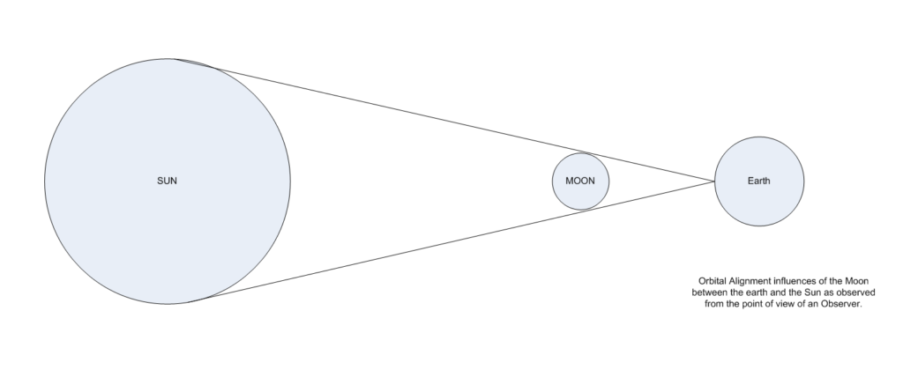
The location of the moon is truly unique. From the point of view of an observer on the planet surface, the moon can eclipse the sun given the correct orbital alignment. This is a truly rare alignment and the reasons for this are unknown.
I cannot help but think that it was set up so by intelligent design, rather than coincidence. It seems impossible, doesn’t it. How can it possibly be coincidence?
The early sun & a possible moon influence
What I find most interesting about eclipses is that they are regular enough events. In fact, Solar Eclipses (shadow of the Moon partially or fully blocking the Sun) can occur two to five times a year, but the majority are partial eclipses. Total eclipses occur about once every 18 months, and affect a very limited area. The maximum coverage of the solar disk lasts between 6 and 7.5 minutes.
The only other astronomical events that have similar event cycles to eclipses are variable stars.
If the sun was once a Cepheid Variable it’s variation might have well matched that of the eclipses of the moon.
Now Cepheid variables are very luminous stars, 500 to 300,000 times greater than the sun, with short periods of change that range from 1 to 100 days. They are pulsating variables that expand and shrink dramatically within a short period of time, following a specific pattern. Obviously, if there was a relationship between the variable star and the moon, it must have occurred early on in the solar system. Perhaps in the first billion years of our solar system.
For me, speculation of the early life of our sun is enjoyable. No, our sun did not start out a G-class star. It grew into the star that we see today. We don’t really know what it was when it was young. Some of my ideas of candidates of what our sun might have been in the distant past are;
The reader need not be confused. I am only suggesting a possible correlation between the timing of the eclipses and a variable star. Perhaps there is more to this mechanism than we are aware of. Perhaps there is some kind of deeper relationship that we are unaware of. Perhaps it is something else.
Anyways, it sure is a fun thing to ponder.
Mirrors the Star
Furthermore, the Moon mirrors the movement of the Sun in the sky by rising and setting at the same point on the horizon as the Sun does at opposite solstices. For example, this means the Moon rises at midwinter at the same place the Sun does at midsummer. There is no logical reason why the Moon mimics the Sun in this way and it is only meaningful to a human standing on the Earth.
Thus, it assists in the belief that the moon is a special gift to mankind. This alignment is only meaningful to an intelligent person residing upon the surface of the earth. All in all, it’s pretty odd, and cannot be explained in light of the behaviors of other bodies in our solar system.
No other planetary body does this. For all the centuries of study on planetary bodies, and stars, not one other object in space has this ability. Not one.
Maybe this too is just a coincidence…
Strange Age
The idea that the moon formed within the solar system is a very seductive and alluring story for the formation of the moon. Unfortunately, that idea also has its problems. Studies of the rocks returned from the moon indicate that the moon originated outside of our solar system. As such, it is easily one billion years older than the earth.
The oldest age for the Earth is estimated to be 4.6 billion years old. However, the moon rocks were dated at 5.3 billion years old, and the dust upon which they were resting was at least another billion years older. The dust on the moon has been dated to 6.3 billion years.
This discrepancy is one that is often dismissed with a smirk. Oh, the smirk implies, the rocks and dust on the moon are not PART of the moon, they are from elsewhere. Oh, how convenient. Ah, just keep on adjusting the facts until they fit your pet theory or prevailing hypothesis.
The fact is that the dust on the moon, as well as the rocks obtained from the Apollo moon landings indicate ages much, much older than our solar system. If we take them as face value, then we need to accept the fact that the moon might be from outside our solar system.
If so, then we really do not know from whence the moon originated from.
Possible Candidates
If the moon did not originate from our solar system, then where did it come from? Well, luckily, there are numerous candidates that offer the possibility that one of the planets around another star might have been attracted to and relocated to our solar system. Some of the candidates include;
- Perhaps it was part of the Gamma Microscopii system, when it came close to the solar system. Backwards extrapolation of the motion of γ Microscopii has shown that approximately 3.8 million years ago, it was only around 6 light-years from the Sun.
- Perhaps it was a member of Scholz’s star. Estimates indicate that the WISE 0720−0846 system passed about 52,000 astronomical units (0.25 parsecs; 0.82 light-years) from the Sun about 70,000 years ago. 98% of mathematical simulations of the star system’s trajectory indicated it passed through the Solar System’s Oort cloud, or within 120,000 AU (0.58 pc; 1.9 ly) of the Sun.
- Perhaps it came from Zeta Leporis. Bobylev’s calculations from 2010 suggest that this star passed as close as 1.28 parsecs (4.17 light-years) from the Sun about 861,000 years ago.
- Or maybe it came from Gliese 208. Calculations from 2010 suggest that this star passed as close as 1.537 parsecs (5.0 light-years) from the Sun about 500,000 years ago.
In any event all of the above candidates are really rather young. The oldest of the lot, Gliese 208 is still only 2.7 billion years old. To help answer this mystery, the star and solar system would need to be at least 5.5 billion years old.
The Chinese Rescue
But…
But, wait! The Chinese are not going to let this mystery stand. They took the rocks obtained from the lunar excursions and reexamined them. They came to the conclusion that NASA and their team of expert American geologists were all wrong. They had made a mistake! Yessur. The Chinese have retested the rocks, and low and behold they find that it almost exactly agrees with the age of our solar system. Imagine that!
“A new analysis of lunar rocks brought to Earth by Apollo 14 astronauts in 1971 suggests that the moon formed 4.51 billion years ago — just 60 million years after the solar system itself took shape.” - Xinhuanet 2017-01-13 14:48:59
It’s sort of like how Democrats keep on finding more and more ballots after they lost an election. And, low and behold the ballots are all voting democrat! Imagine that!
The Cold Core
If the moon is the same age as the rest of the solar system, then there is a real problem with the fact that the moon is no longer geologically active. Because from what we have observed, the moon’s core should still be molten.
If the moon was the same age as the earth, the inner cores, while different in size, would still be similar. Since the earth’s core is molten, then it goes to follow that the moon’s should be molten as well.
However, that is not the case.
The core of the Moon cooled substantially earlier than any of the inner planets or planetoids.
Which means that either the moon was;
- The same age as the solar system, but occupied a substantially colder orbit before it was located where it is today.
- Is a different age than the solar system, and thus being older, the core has since solidified.
The Tungsten-182 Mystery
The mystery of an ancient moon is very perplexing. It is very, very strange. Because we do know (or at least we think we know.) that the moon actually did come from our solar system. We know this, we believe, through a study of isotopes.
Researchers have [1] presented evidence that the chemical similarity between the earth and the moon is due to a violent mixing of material that occurred when Theia hit Earth. Another study [2] presents evidence that an alternate explanation (that against all odds, the far-flung Theia happened to be made of similar stuff to our Earth) may be more plausible than previously assumed.
The authors of the first two studies looked at tungsten in Earth and the moon, tracing how much of a particular isotope has formed in each body. The isotope, Tungsten-182, doesn’t come from these basic building blocks. It’s created by another element as it decays. So by comparing the ratio of the parent element to the daughter element (in this case tungsten) the researchers were able to work backward and establish that the moon and the Earth had the same isotopic compositions when they formed.
So one of either two situations support this;
- The moon was formed in our solar system.
- All solar systems generate similar isotropic signatures.
As such, the mystery is this; how can the moon be older than our solar system, if the isotropic signatures are similar?
Completely Circular Orbit
The moons orbit is intentionally designed to be completely circular. It’s orbit is not elliptical like the vast majority of stellar objects. Our moon is the ONLY moon in the solar system that has a stationary, near-perfect circular orbit. Maybe that is because of the size of the moon relative to the size of the earth. Maybe it is due to some under examined attribute of the earth, or you know, maybe it is just coincidence.
Yah. Maybe it is just another coincidence.
Unusual Center of Gravity
Stranger still, the moon’s center of mass is about 6000 feet closer to the Earth than its geometric center (which should cause wobbling), but the moon’s bulge is on the far side of the moon, away from the Earth. On rocky planetary bodies, the center of gravity is almost completely centered in the middle of the core. This is what assists in stable rotation, like a (child’s toy) top.
Once the CG is not located in the center, it will create an off-center and off-balance condition. Much the same way you would topple over if you tried lifting up a heavy boulder. The weight throws off your center of gravity, and you need to support yourself and brace yourself to lift that boulder up properly.
Now, this might be due to other things, like a massive bombardment of very heavy masses into the moons crust. But if you look at the gravitational map, the mass variations are pretty much evenly dispersed. Indeed, the moon has a strange gravitational map.
Bizarrely, its concentration of mass are located at a series of points just under its surface – which caused havoc with early lunar spacecraft. It is NOT at the center of the planetary body. Looking at the map can tell us a lot about how the moon came to be what it is today.
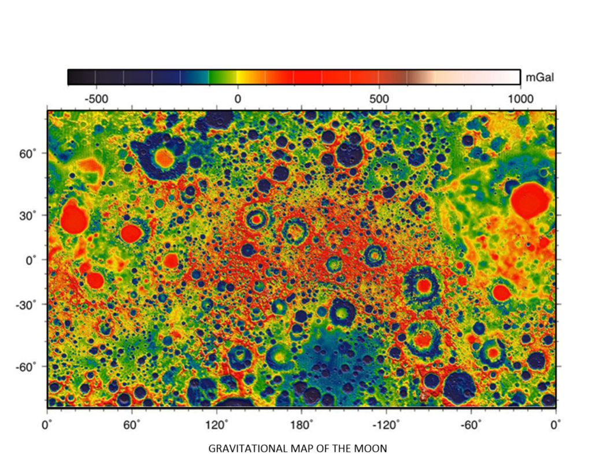
It sure looks like the moon is composed of areas (or spots) that have heavy, while most of the moon is rather light. Further, there seems to be some evidence that heavy objects plunged into the moon and formed craters.
Tidal Influence
Every schoolboy and girl knows that the moon creates the tides. The ocean moves; it raises and falls because of the gravitational tug and pull of the moon. We all think that this is natural, expected and normal. That is because the entire human race has lived with this effect since the dawn of man. We never think about it, or it’s significance.
The kind of effect that we see and experience is only possible with a large moon orbiting a planet in the configuration that we observe with the moon. For instance, the moons of Mars would have quite a difficult time trying to replicate such an effect. This effect, provides movement of the seas. This movement permits coastal creature evolution from that of an aquatic being to that of a land-dwelling creature. I cannot imagine that kind of evolutionary leap on a world with a quiet quiescent placid ocean.
If you think about it, the moon seems to be specifically designed to create the same kind of tidal effects that are present on a planet (with a moonlet) that is in close orbit to a red dwarf star. Interesting, very interesting.
Magnetized Rocks
The presence of magnetized rocks on the surface of the moon, which has no global magnetic field, has been a mystery since the days of the Apollo program. You can well understand how this would be a mystery. The moon is cold, geologically dead, and lifeless. It has no magnetic field. Yet, when the Apollo team returned back to the earth, they hauled back rocks that were all heavily magnetized.
The only way that these rocks could have been magnetized was if the moon was close to another body with a large magnetic field, like the sun, Jupiter or Saturn.
“Based on their calculations, the researchers estimate the lunar magnetic field might have lasted for about a billion years, somewhere between around 2.7 billion and 4.2 billion years ago.” -Space.com
While there have been efforts to take into account this strange situation, they all follow the same prescription. You take the prevailing theory of the moon formation, and then come up with new techniques, new processes, and new things to explain away the elephant in the room.
Truly, that is what is going on.
The easiest explanation is that the moon was in a periodic (maybe short lived) orbit around a very strong magnetic generator, and then moved (somehow) to its current position around the earth. The problem with this is that it doesn’t fit in with the prevailing populist theories of moon planetary formation.
Here’s what I am talking about;
- Ancient lunar dynamo may explain magnetized moon rocks
- Mystery of Moon’s Lost Magnetism Solved?
- Why are moon rocks magnetized? Scientists unravel mystery.
- Magnetized moon rocks
- Magnetized Moon Rocks
- Magnetized Moon Rocks Mystery
All of the internet was abuzz with the apparent blind acceptance of a theory that seems to solve the magnetization mystery. Yet, I see no subsequent tests to validate this theory, nor any examples of other planets or systems that seem to maintain this narrative.
It’s just blind acceptance. At that, I must admit that I am flabbergasted.
Intentional or Intelligent Design?
Stepping back from the moon, for a brief spell, and taking a look at the big picture, we can see some “special characteristics” that our solar system has as opposed to the other solar systems that we have observed. If, our solar system was crafted or tailored as a “special place” for “special purposes”, then perhaps the odd characteristics found on the moon might teach us about our role in the universe, and the role of our solar system in all of this…
“We find that the properties of the planets in our solar system are not so significantly special compared to those in exosolar systems to make the solar system extremely rare. The masses and densities are typical, although the lack of a super-Earth-sized planet appears to be somewhat unusual. The orbital locations of our planets seem to be somewhat special but this is most likely due to selection effects and the difficulty in finding planets with a small mass or large orbital period. The mean semi-major axis of observed exoplanets is smaller than the distance of Mercury to the Sun. The relative depletion in mass of the solar system’s terrestrial region may be important. The eccentricities are relatively low compared to observed exoplanets, although the observations are biased toward finding high eccentricity planets. The low eccentricity, however, may be expected for multi-planet systems. Thus, the two characteristics of the solar system that we find to be most special are the lack of super-Earths with orbital periods of days to months and the general lack of planets inside of the orbital radius of Mercury.” - Martin and Livio, “The Solar System as an Exoplanetary System,” The Astrophysical Journal Vol. 810, No. 2 (3 September 2015)
Just saying…
Now let’s get to the number one curiosity that I have devoted this post towards. The fact that the moon is hollow.
A Hollow Moon
The Moon does not have a solid core like every other planetary object. It has a unique, and even strange kind of core. It is either hollow or has a very low-density interior. Possibly the strongest evidence for it to be a “hollow object”’ comes from the fact that when meteors strike the Moon, the Moon rings like a bell.
More specifically when the Apollo crew in November 20, 1969 released the lunar module, after returning to the orbiter, the module impact with the Moon caused their seismic equipment to register a continuous reverberation like a bell for more than an hour. This ringing effect is simply the sounds travelling from one surface to the opposite surface. That is how one obtains a ringing sound. That implies an empty void of some unknown dimension.
The moon’s mean density is 3.34 gm/cm3 (3.34 times an equal volume of water) whereas the Earth’s is 5.5. What does this mean? In 1962, NASA scientist Dr. Gordon MacDonald stated,
"If the astronomical data are reduced, it is found that the data require that the interior of the moon is more like a hollow than a homogeneous sphere."
Nobel chemist Dr. Harold Urey suggested the moon’s reduced density is because of large areas inside the moon where is “simply a cavity.” MIT’s Dr. Sean C. Solomon wrote,
"the Lunar Orbiter experiments vastly improved our knowledge of the moon’s gravitational field... indicating the frightening possibility that the moon might be hollow."
In Carl Sagan’s treatise, Intelligent Life in the Universe, the famous astronomer stated,
"A natural satellite cannot be a hollow object."
On November 20, 1969, the Apollo 12 crew jettisoned the lunar module ascent stage causing it to crash onto the moon. The LM’s impact (about 40 miles from the Apollo 12 landing site) created an artificial moonquake with startling characteristics—the moon reverberated like a bell for more than an hour.
This phenomenon was repeated with Apollo 13 (intentionally commanding the third stage to impact the moon), with even more startling results. Seismic instruments recorded that the reverberations lasted for three hours and twenty minutes and traveled to a depth of twenty-five miles, leading to the conclusion that the moon has an unusually light—or even no—core.
But, how could this be?
The answer is right there for all of us to see. It is just that no one wants to consider it. To answer this question we have to go back to elementary school. That’s right. Now I really don’t know what they are teaching in schools today. I suspect that it is something along the lines of…
“Now, boys, and girls, and transgenders… Water is wet. Brando has electrolytes. That’s it for science. Now let’s talk about important things. Let’s talk about how you feel about Muslims not being as privileged as White people are.”
Yeah, it’s that obvious.
Anyways, let’s talk about iron. You know, that stuff that (over time) migrates to the center of a planet. Well the properties of iron is pretty well known, and the various alloys have all been mapped out. To understand what happens to the iron core as it cools down we need to look at a phase diagram for iron. Here’s a pretty decent one. It plots the phases of various steel / iron alloys by temperature at a constant pressure (Ugh! Unfortunately, we’ve got to assume 1 atm pressure in this chart.).

If there is one thing that should be clear in this diagram, it is that regardless of the concentration of residual carbon in the iron matrix, a ball of liquid molten iron will solidify. It will go from liquid to solid. Now this is pretty much well known, especially in astronomical circles. What you need to take into account is pressure as well as temperature. To this end, here is a nice chart showing at which temperature and pressure that iron in the core of a planet goes from liquid to a solid state.
And, what is most important to this discussion is that when iron goes from liquid to solid it shrinks. Now, this should be common knowledge. Most metals shrink when they get cold.
The amount of shrinkage varies from alloy to alloy and material to material. The rate of shrinkage changes as well, and depends on many, many factors. If the reader is so inclined, you can look at the shrinkage of steel under thermal contraction as it solidifies HERE. It’s good stuff, but a little too dry for casual reading.
Now, metal shrinks in stages during the cooling process. It doesn’t just shrink all of a sudden. An observer wouldn’t be stunned or startled when it happens.
In the solidification of molten metals, there are three separate degrees of shrinkage. These degrees or stages, include [1] liquid-to-solid shrinkage, [2] liquid shrinkage, and finally a process [3] known as patternmaker’s contraction.
Liquid Shrinkage
“During solidification of a metal, the density of the material changes due to cooling of the metal in both liquid and solid state as well as due to the solid to liquid phase transformation itself. Phase transformations in the solid state during solidification may also cause a volume change which will affect the solidification process.” -On the shrinkage of metals and its effect in solidification processing, by Anders Lagerstedt.
The first stage is not too exciting. What actually happens is that the molten metal starts to contract, while it is still liquid. If you had a container of molten iron on your desk and you kept cooling it down, then there would be a point where the iron was still liquid, but the amount of liquid would decrease. The liquid itself would shrink. This is known as “liquid shrinkage”.
If you were astute, and noticed this, you might think that the molten iron evaporated into the air. (Like how a pan of boiling water eventually gets less and less over time. However, this is not the case at all. The actual liquid iron shrinks.
Liquid to Solid Shrinkage
The second stage is called the Liquid-to-solid shrinkage. As the mass of metal changes from the fragmented molecular particles into the integrated blocks, it starts to shrink. It is a process involving the molecular arrangement of the substance. Of course, the amount of solidification shrinkage varies from low to high shrinkage volumes as well as from alloy to alloy.
There is an entire science to this process, and it is extremely interesting. However, for our purposes, let’s just keep it simple.
Patternmaker’s Contraction
After the solidification of the metal is complete and cooling is to ambient temperatures, the contraction that occurs is known as the Patternmakers Contraction. The proportions of the mold cavity are changed by this contraction from those of the molten metal in the cast to that of the alloy’s grade of compression. This is a problem that all people experience when they try to cast parts out of iron. The iron shrinks during cooling and it becomes smaller than the mold that it was cast out of. If the mold maker is not careful, there will be distortions in the final part.
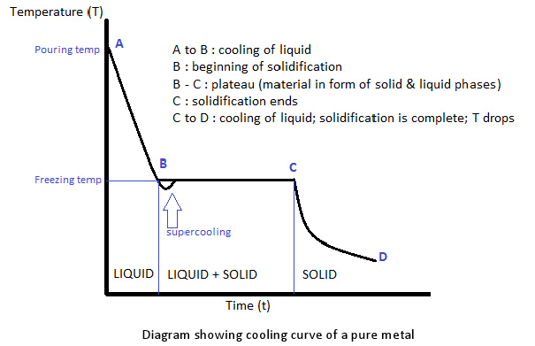
A moon with a contracted iron core
Which brings us back full circle to our moon.
Most planets in our solar system, with the exception of the smaller planetoids, asteroids and comets have a warm and hot interior. At the center of most of the planets in our solar system reside hot molten liquid cores. The mantle and cooler surfaces of the planets surround these hot cores. But that is not the case with our moon.
A long time ago, when is unknown, the moon cooled down and the hot and molten interior normally associated with planets became cold and lifeless. As it cooled down, it shrank.
All metals, and metal ores shrink when they cool down. The interior center of the moon was mostly iron, and so when the hot molten iron cooled, it shrunk. As it shrunk, it created numerous gaps. One of which was the largest and most predominant gap.
This was much like the core of a peach. When the seed inside a peach shrinks, it creates a void or space gap inside.
In the case of “our” moon, the heavy iron core was much denser than the Moon’s outer mantle and thus it was more apt to be affected by the Earth’s gravitational attractive forces. The gravitational pull on the moon (by our earth) eventually caused the cool iron core to displace.
This displacement tugged the core to one side of the hollow void. It tugged the core towards the Earth, thus creating a displaced center of gravity. And, thus helped to make the Moon tidally locked in place. (The core of iron was “flattened” in addition to being displaced.) This movement caused the void to change shape. Thus making the existing void larger and greater in height.
While we do not know the absolute composition of the core of the moon, we do strongly suspect that it is of iron composition.
Meteoritic Iron
Until someone bores down into the core of a planet, there is really no way for us to know what the composition of iron is at the core. For reasons of my own, I like to think that the best approximation of the iron composition of the core of the moon is something resembling meteoritic iron.
“Meteoric iron, sometimes meteoritic iron, is a native metal found in meteorites and made from the elements iron and nickel mainly in the form of the mineral phases kamacite and taenite. Meteoric iron makes up the bulk of iron meteorites but is also found in other meteorites. Apart from minor amounts of telluric iron, meteoric iron is the only naturally occurring native metal of the element iron on the Earth's surface.” -Wikipedia
Without getting into too much detail, we can clearly see that Irregardless to the percentage of kamacite or taenite in the core of the moon, the core will eventually phase change into a solid mass eventually. There is a variation on when this occurs and how, depending on the amount of nickel, but this doesn’t change the fact that the core will eventually go completely solid.
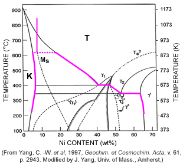
The iron core, of some unknown alloy (probably a mixture of kamacite and taenite), contracted when it cooled. It shrank. From what we know about the shrinkage of iron (and iron alloys) it underwent stages of shrinkage. If the behavior of cooling iron in a planetary core is similar to that of cooling iron in a metallic mold, then we know that the iron core would delaminate from the interior core of the planet.
This would be exactly as what is observed by the “Patternmaker’s contraction”.
“Most iron meteorites are thought to come from over 50 asteroids 5-100 kilometers in size that were melted, differentiated into metallic cores and silicate mantles, and broken open by impacts long after they had slowly cooled. However, we find that the cooling rates for one group of iron meteorites (dubbed the IVA group) and other irons require a much more complex history and much larger parent bodies. The IVA metal was probably derived originally from a body at least 600 kilometers in diameter, and possibly much larger, that was dispersed by an impact leaving a molten metal body 300 kilometers in diameter. The molten metal body solidified and cooled slowly with scarcely any enveloping silicate mantle. This history supports several recent theoretical studies that infer that differentiated asteroids and meteorites are debris from protoplanetary collisions, that protoplanets were abundant in the asteroid belt, and that parent bodies of iron-rich meteorites were broken up early.” - Edward Scott (Hawai'i Institute of Geophysics and Planetology), Jijin Yang and Joseph Goldstein (University of Massachusetts, Amherst) from the article titled “When Worlds Really Did Collide”.
While no one, that I know of, has ever worked on the behavior of the metallic iron that would exist at the core of a planet, the team of Scott, Yang and Goldstein have come close. They studied the microscopic cross-sections of meteors and meteorites to learn about how they cooled. They concluded that…
“Our only clues to their sizes come from the thermal histories of meteorites as the larger a solid body, the longer it took to cool. Most cooling rates for meteorites have been obtained from studies of Fe-Ni metal grains, which on cooling from 1000 to 700 K change their crystal structure. For iron meteorites, which are mostly derived from asteroidal cores, this structural change produces the well-known Widmanstätten pattern of crystallographically oriented kamacite plates in taenite.”
They studied the taenite grains with an electron microprobe. From this, they then plugged the observed data into a computer program that reproducing the data with computer models for kamacite growth together with diffusion rates and equilibrium mineral compositions at 1000-700 K. This produced a computer model that simulates the formation of the Widmanstätten pattern of oriented kamacite plates.
It is a very, very interesting subject. However, rather than getting down and deep into all the dirt concerning this, let’s skip all the chapters and go to the end of the book.
After all their analysis, they derived a chart showing the cooling rate of an iron core within a planet (as a function of nickel percentage). This is the “quick and easy” chart;
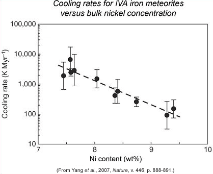
They, however, are concerned with the accuracy of this study. They do not think that it would be applicable to cooling within a planet. “Since two different techniques show that the IVA irons cooled at very diverse rates, they could not have cooled in a mantle-covered metallic core.”
Each curve in this diagram shows how the cooling rate changes with falling temperature at a specific location inside the metallic body. Our IVA cooling rates, indicated by the two straight lines, suggest that the IVA irons were located between 0.4R and 0.97R, where R is the radius of the body (150 kilometers). In other words, the meteorites come from depths 97% of the way to the surface (0.97R) from the center to only 40% (0.4R).
A Shrunken Core
The details have far too many variables for us to nail down exactly what happened. What we do know is that the core of the moon went from a hot molten mass to a cold metallic mass over time.
We believe that the amount of time that it took to occur was due to the composition of the core. This depended on the amount of kamacite and taenite, as well as the percentage of nickel at the core. Other influences included the thickness and composition of the mantle.
We know that today, with an age of 5.5 billion years, the moon’s core is cold, lifeless and dead. We also know that at one time, it was alive and active. We do not know how long that it took for it to cool down to a lifeless rock, and as such we don’t know exactly how long the core has been cool. It is strongly suggested that this amount of time exceeded that of the age of our solar system.
What is of most interest to us today, is what the shrinkage rate is for kamacite and taenite. For that would give us a rough idea of the size of the core when it was molten, compared to the size of the core now that it is cold and solid. The general rule of thumb in calculation of shrinkage in industry is to multiply the total volume by .06 to find out the total shrinkage.
Of course, this isn’t truly accurate. The rate of shrinkage will vary from metal to metal. Here is a comparative chart;
Typical Shrinkage Allowances for Important Casting Metals
| Metal | Contraction (per cent) | Contraction (mm per meter) |
| Grey cast iron | 0.7 to 1.05 | 7 to 10.5 |
| White cast iron | 2.1 | 21 |
| Malleable iron | 1.5 | 15 |
| Steel | 2.0 | 20 |
| Brass | 1.4 | 14 |
| Aluminum | 1.8 | 18 |
| Aluminum alloys | 1.3 to 1.6 | 13 to 16 |
| Bronze | 1.05 to 2.1 | 10.5 to 21 |
| Magnesium | 1.8 | 18 |
| Zinc | 2.5 | 24 |
| Manganese steel | 2.6 | 26.5 |
Since we believe that the core was composed of an alloy of iron, mostly containing kamacite and taenite with an unknown percentage of nickel, we can reasonably assume that it is a variation of “white iron”. Thus, it has a shrinkage rate of 2.1%, or 21 mm/meter. (That is about a inch for every yard of iron.)
A Debate on the Core
Not everyone believes that the moon has a dead, solid core.
There are those who believe that it is still geologically active. As such, they envision the core to be identical to that of the earth, only much, much smaller. Their computations on the size of the core are based on this assumption. As such, if the moon has a core like that of the earth, they reason, it MUST be completely out of step with every other planet in the solar system. For it to fit their models, it has to be very tiny.
You can read their arguments here;
The argument goes a little something like this. The lunar core is, by latest accounts, 1 to 3% of the total mass, but Earth’s core is 33% of the total mass. The Moon’s core is, in fact, proportionately smaller than the cores of any of the inner planets in the Solar System. Why this must be so has never been worked out, and there are no theories to explain it.
However, if you ignore the statist arguments that the moon has a geologically active core, and embrace the idea that the moon is far older than the earth (as proven by the rocks), and thus the core has one or maybe two billion years longer to cool down, then we can accept a hypothesis that matches observed data. The moon has a normal core, of a normal and “typical” size. The only difference is that it is dead and no longer hot and molten. As dead, we consider it to be 3% of the diameter, and not 33% of the moon’s diameter.
What the Core looks like
At this stage of the game, it is very difficult to identify the amount of shrinkage that the iron core underwent. It is also difficult to determine what percentage of the cavity was produced during the shrinkage process, and what form it took on. Certainly there would be areas of geodes and pockets of various sizes and shapes.
Additionally, the migration of the shrinking core would be towards the largest nearby planetary body, the earth. The solid iron core would more than likely rest along the inside of the cavity nearest to the earth. As such it might compress the inner cavity walls somewhat, making the void slightly bigger opposite it.
Ignoring their statist studies (spending time to make things fit an established narrative), and working out our calculations based on observations from all other planets in our solar system, we come up with the following baselines;
- The moon diameter is 3,476.28 km / 3,471.94 km = 3,374.11 km.
- The geologically active core diameter is 33% of the moon diameter = 1,146.46 km.
- The dead core diameter is 3% of the moon diameter = 104.22 km.
- The shrinkage of the core is 2.1% = 2.18 km.
Since we have to assume that the earth provided a gravitational influence during the shrinking process, there would be movement of the core during the shrinking process. The core would move closer to the earth. The movement would equal that (or be very similar to) that of the shrinkage.
- Movement of the center of gravity = 2.18 km.
This makes me feel really good that I am on the right track. Apollo 15 and 16 both used laser altimeters to navigate the moon. To the surprise of everyone in NASA, the center of gravity of the moon was determined to be offset by around 2 km. So, my calculations are absolutely confirmed by actual readings. I calculated an offset of 2.18 km, and actual measured offset was “approximately 2.0 km”.
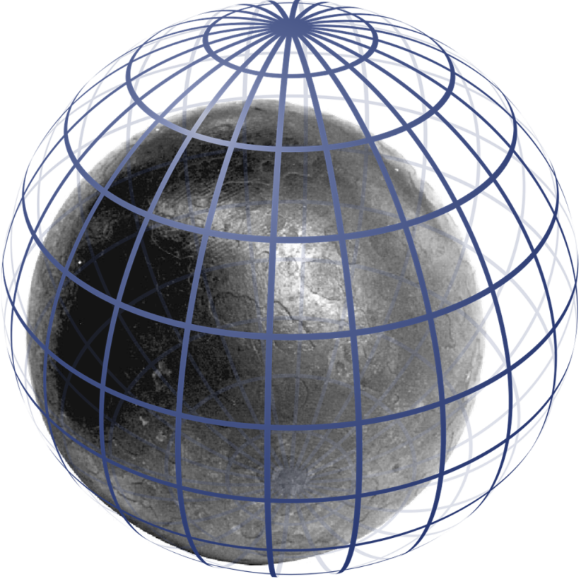
Radiation
What I find interesting about this whole situation is the idea that there is this huge cavity inside the moon. What would it be like? Would people there be weightless because they are in the middle of a planet? No, not likely. Chances are that they would walk on the surface of the largest gravitational attractor. This would NOT be the solidified core. No. It would be on the solidified mantle.
The solid core would be above them in their “sky”.
Further, even with a solid core, it would still take a long, long time for the core to go completely cold. In other words, the solid iron ball in the “sky” would be emitting heat and light in the IR range (via “black body” radiation) for a long time. This radiation would keep the cavity temperature warm, and provide light to those creatures adapted to that kind of radiation.
So, to an inhabitant inside of the cavity, there would be a large “sun” that would illuminate the ground around us all. This sun would emit heat and light in the IR range. To a creature who could see in the IR range, it might look a little like this…

This is similar to what it is like in a steel mill. If you were standing near an Electric Arc Furnace when the steel is poured, you would feel pretty hot. This is because the hot furnace is sending out infra-red radiation. This is part of the electromagnetic spectrum – with a wavelength slightly longer than visible light. You cannot see it, but boy can you feel it. The same is true for ingots that are pulled right out of the mold. They sizzle in heat, but if you didn’t know better, you might walk up to them and touch them and maybe lose an arm in the process.
When the infra-red radiation hits your face or hands, it is absorbed and warms you up. The hotter the molten iron, the more intense the radiation and the hotter you will feel.
A species, from say a red dwarf, would be well suited to seeing in this wavelength. To them, it would be like bright daylight on a summer day.

Putting it all Together
No one will ever know for certain, the story behind the moon and how it ended up where it is today. At best, we can come up with theories.
The theories that seem to solve all the of the mysteries of the moon, do seem to be the most outlandish. After all, to believe in the certainty of the more outlandish theories is to accept the insignificance of the human species.
Which brings up a point that is worthy of consideration. If the earth is important enough to warrant repositioning of a planet, then the species capable of doing so, must also still be involved in this planet to some degree.
Is it really too difficult to believe that the earth is indeed a special place? Is it too difficult to consider that either by [1] intelligent direction, or by [2] a coincidence of rare events, that the earth is truly unique?
Consider the possibility;
- The Moon was formed outside of our solar system.
- The moon formed close to a star or a large body like a Jupiter sized gas giant.
- After the first one billion years during the formation of the solar system it migrated outward for reasons unknown.
- Many of the rocks on the moon are magnetized because of the large magnetic field associated with the star / gas giant that it orbited.
- During the movement process, the Moon collected (or had) a large number of orbital companions that fell into a more or less unstable orbit around the former Moon equator. These minor planetary bodies eventually fell to the moon and created a banded cratering effect.
- The moon location around the earth relative to the sun is intentional. The reasons for this is not altogether clear. Perhaps we can speculate that it was because (at the time the moon was moved) the sun was more active or variable and thus the moon had to “protect” the earth.
- The presence of a huge underground void caused by the displacement of the core is a significant feature of the Moon and does absolutely create a secure underground habitation were a species capable of the technology to harvest that advantage.
- The presence of the moon considerably changed the development of many naturally evolved creatures on the surface of the planet. As without the tides, the evolutionary sequence of many creatures would be vastly different today.
Conclusions
The moon is no longer geologically active. It is a large and dead object that orbits our planet. It is an interesting object that has more than just a few mysteries.
There are many theories on how the moon came to be, but the most outrageous theories are the ones that actually fit the observed data and characteristics.
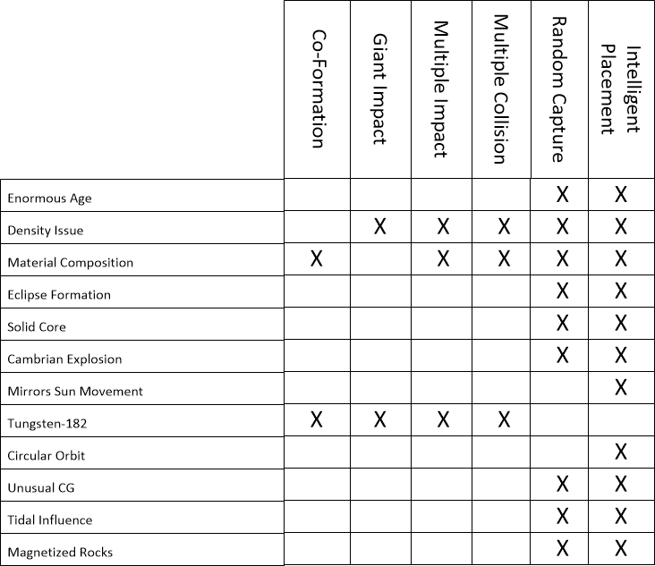
The moon possesses a hollow cavity that is very enormous. It was formed when the iron core solidified, and during the shrinking process it delaminated from the primarily silicon mantle. At the widest point, the ceiling for the cavity is at 2.1 km, or 6889.76 feet. This is a huge volume of space. As such it can contain stratus, stratocumulus, and cumulous clouds and rain (given a proper oxygen atmosphere with water and nitrogen).
The surface area on the iron core surface is also enormous. At over 32,685 km, it is bigger than the state of Massachusetts.
Now, for the kicker, if the moon was placed in orbit around the earth through the “placement hypothesis” by an extraterrestrial intelligence, then they would also have the technology to detoxify the inner void present inside the moon. They would occupy it, and create a stable and safe environment from which to monitor the earth by.
It is unknown how long this void would have been inhabited, however it is reasonable to assume that creatures and fauna presently now long extinct, could have continued their existence within that chamber and evolved in different ways over the time from their earth brothers and sisters. That is, were the inhabitants of the moon’s interior desirious of the creation of an internal natural habitat.
Take Aways
All this being stated;
- Nobody knows how the moon was formed. All we have are theories.
- Nobody knows why the earth and the moon have such an unusual relationship. No one is brave enough to provide any reasonable hypothesis.
- The moon is old, much older than our solar system. No matter what the latest study from China purports.
- The moon is not precisely hollow, it has a large void instead.
- The void was formed by the solidification of the iron core, and a delamination during the “Patternmaker’s contraction”.
- The gravity of the earth displaced the core towards the earth by 2.1 km.
- The early life of the sun and the solar system is very interesting, but hasn’t really been given the study it deserves.
- If the earth has a role in the evolution and development of the human sentience, then the moon would play an important role in it.
RFH
How about a Request For Help? I tire of busybodies and statists who poke fun at the ideas and theories of others. They offer no constructive dialog. Rather they just make fun, ridicule, and then scurry under a rock.
To help put this in perspective, put yourself in my shoes…
Imagine that you are working at a company with a brutal NDR. You cannot divulge anything about what you are involved in for any reason. Now, let’s suppose that for thirty years you were involved in training unicorns to dance with bigfoot. To help with your training, the Lock Ness Monster would gather “magical beans” that you would award the unicorns when they did a particularly impressive dance move; like the cha cha or a nice rendition of the samba. Now, there is no way that you can talk about unicorns, bigfoot, or the Lock Ness Monster. But, the NDR doesn’t cover “magic beans”. So in the best interests of society, you might want to posit your thoughts about growing “magic beans” and how they might be of interest to imaginary creatures.
That is the situation that I find myself in.
So, if you, the reader, were so interested, I would welcome calculations that are more accurate on the displacement of the moon. Or, perhaps the radiative heating of the chamber void. I would welcome a discussion on the possibility of our sun once being a variable star. I would welcome a discussion on what kinds of large body would be able to magnetize the rocks thus found on the moon. I would welcome a relook at the Chinese study that claims that the moon is not as old as the rocks portray.
This is my call-out, to you the reader, to assist all of us in solving these mysteries. After all, this is a far better use of the internet than for looking at Justin Bieber videos.
FAQ
Q: Is the moon hollow?
A: The moon has an enormous void deep in the center of it. This void is over the size of the state of Massachusetts, and is large enough to have clouds and a stable atmosphere.
Q: How was the moon formed?
A: No one knows. We had best believe that it formed using typical processes, and migrated to its current position in some manner that we are unaware of.
Q: How old is the moon?
A: The rocks obtained by the Apollo team, at various and numerous landing sites, confirmed that the moon was at least one billion years older than our solar system. The dust that they collected was one billion years older than that. This suggests that the moon originated outside of the solar system.
However, the Chinese have determined that NASA’s calculations were all incorrect. The actual age of the moon absolutely agrees with the age of the solar system.
Q: What is the significance of the magnetized rocks on the moon?
A: The presence of magnetized rocks points to a very strong magnetic flux. This can only occur when the moon was in close proximity to a star or large gas giant. Close proximity means in close and very tight orbit around it.
Q: Was the moon positioned around the earth intentionally?
A: The only theory that describes some of the more perplexing attributes of the moon is one that suggests exactly this.
Q: Is the moon inhabited?
A: If you had the ability, the technology, and the desire, the moon would make a very nice and stable habitat.
MAJestic Related Posts – Training
These are posts and articles that revolve around how I was recruited for MAJestic and my training. Also discussed is the nature of secret programs. I really do not know why the organization was kept so secret. It really wasn’t because of any kind of military concern, and the technologies were way too involved for any kind of information transfer. The only conclusion that I can come to is that we were obligated to maintain secrecy at the behalf of our extraterrestrial benefactors.


MAJestic Related Posts – Our Universe
These particular posts are concerned about the universe that we are all part of. Being entangled as I was, and involved in the crazy things that I was, I was given some insight. This insight wasn’t anything super special. Rather it offered me perception along with advantage. Here, I try to impart some of that knowledge through discussion.
Enjoy.


MAJestic Related Posts – World-Line Travel
These posts are related to “reality slides”. Other more common terms are “world-line travel”, or the MWI. What people fail to grasp is that when a person has the ability to slide into a different reality (pass into a different world-line), they are able to “touch” Heaven to some extent. Here are posts that cover this topic.


John Titor Related Posts
Another person, collectively known by the identity of “John Titor” claimed to utilize world-line (MWI egress) travel to collect artifacts from the past. He is an interesting subject to discuss. Here we have multiple posts in this regard.
They are;